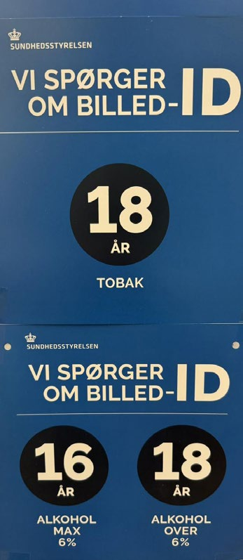
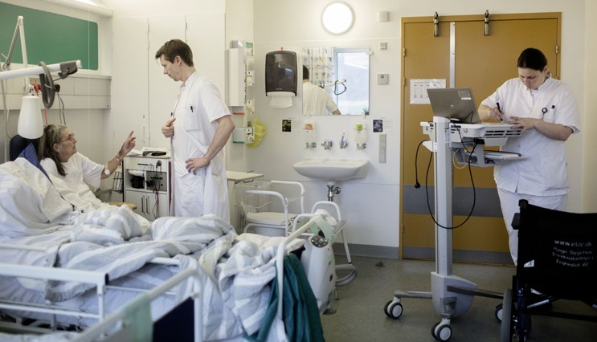

6.16 – SUNDHED OG SUNDHEDSVÆSEN
sidde 238
Sundhedsvæsen
Sundhed er et af de områder, som vælgerne synes, er allervigtigst. Sundhedsvæ senet er også det område – kun overgået af overførselsindkomsterne – som det offentlige bruger flest penge på i Danmark. I 2025 udgjorde sundhedsvæsenet 9,4 procent af Danmarks samlede økonomi – og udgifterne er vokset hurtigt de seneste årtier. Årsagen til denne stigning er til dels, at der er blevet flere ældre, men stigningen skyldes især, at teknologien hele tiden giver flere og bedre, men også dyrere muligheder for at behandle sygdomme.
Sundhed I Et Historisk Perspektiv
Et stykke op i 1800-tallet var middellevetiden i befolkningen kun cirka 40 år, og en stor del af befolkningen døde allerede som børn. Siden da er folkesundheden forbedret væsentligt. Den danske befolkning lever nu meget længere. Middelleve tiden er (i 2024-2025 ) 83,9 år for kvinder og 80,3 år for mænd. Et andet resultat af den forbedrede sundhed er, at befolkningen er blevet meget højere. Gennemsnits højden er siden midten af 1800-tallet vokset fra cirka 165 cm for mænd og 155 cm for kvinder til 180 cm for mænd og 167 cm for kvinder.
Den forbedrede sundhed skyldes en række forskellige faktorer, som for alvor tog deres begyndelse i 1800-tallet. For det første kan der produceres meget mere mad. Det gør, at alle har nok at spise og dermed også bedre kan modstå sygdomme. For det andet har lægevidenskaben udviklet sig betydeligt: Viden skaben ved meget mere om bakterier, virusser og andet, der gør os syge, og dermed også om, hvordan sygdomme kan forebygges og behandles.
For det tredje er hygiejnen forbedret med for eksempel underjordiske kloakker, rindende drikkevand, toiletter og sundere boliger. Der er også en større almen viden i befolkningen om, hvor vigtig god hygiejne er i forhold til at undgå sygdomme.
For det fjerde er der blevet opbygget et sundhedsvæsen, hvor alle borgere har adgang til at komme til læge og på sygehus. Københavns Kommunehospital (bygget 1858-63) var et af Danmarks første ”moderne” sygehuse. I sidste halvdel af 1800-tallet og begyndelsen af 1900-tallet blev der bygget over 100 sygehuse i Danmark. Fra 1893 gav staten tilskud til sygekasser, som var forsikringsordninger i forhold til sygdom: Hvis man betalte et fast bidrag til sygekassen, kunne man til gengæld få dækket udgifterne, når man var hos for eksempel en praktiserende læge. Sygekasserne bestod indtil 1973, hvor de blev afløst af et helt igennem offentligt system: Den offentlige sygesikring.
Læremateriale Til Indfødsretsprøven
sidde 239
Ændringer I Sygdomsbilledet
Den samfundsudvikling, der har gjort os meget rigere på få generationer, har ikke bare givet os råd til bedre behandling og fået udryddet mange af de sygdomme, der følger med underernæring. Den har samtidig givet os råd til at spise meget mere (fed og sukkerholdig) mad, samt ryge tobak og drikke mere alkohol. Det har ført til, at der i Danmark, som mange andre lande, er sket en stor vækst i antallet af såkaldte livsstilssygdomme, det vil sige sygdomme, man har øget risiko for at få på grund af den måde, man lever på. Det kan for eksempel være sygdomme som kræft, hjertekarsygdomme, sukkersyge og KOL. Den ændrede levemåde er blandt andet også afspejlet i, at andelen af borgere, som er svært overvægtige, er steget fra 5-6 procent i 1987 til 19 procent i 2023.
Livsstilssygdommene er også helt afgørende for, at der – selv om størstedelen af sundhedsvæsenet er gratis – fortsat er ”social ulighed i sundhed”. For den usunde levevis hænger i høj grad sammen med en række sociale forhold, ikke mindst uddannelsesniveau. Der er således flere personer med kort uddannelse, der ryger, spiser usundt eller dyrker lidt eller ingen motion. Omvendt er der lidt flere med lang uddannelse – særligt blandt personer over 65 år – der drikker meget alkohol. Men samlet set har personer med kort uddannelse større risiko for at få en række sygdomme og dø forholdsvis tidligt end personer med lang uddannelse. Ufaglærte lever for eksempel i gennemsnit fem-syv år kortere end akademikere.
Der er vedtaget en række love, som skal få flere til at leve sundere. For eksempel skal man være fyldt 16 år for at kunne købe øl i butikkerne (med et indhold af alkohol på mellem 1,2 og 6 procent) og 18 år for at købe cigaretter, stærk øl, vin og stærk spiritus (med et indhold af alkohol på 6,6 procent og derover). I nattelivs-zoner skal man også være fyldt 18 år for at købe alkohol efter klokken 22.
Rygning er den største enkeltstående årsag til sygdom og død i Danmark. Cirka 16.000 mennesker dør årligt som følge af rygning. Det er mere end hvert fjerde dødsfald i Danmark. For at få folk til at ryge mindre er det blevet forbudt at ryge indendørs på offentlige steder,
Læremateriale Til Indfødsretsprøven

sidde 240
det vil sige steder, hvor der er adgang for alle: for eksempel offentlig trans port, sportshaller og biografer. Det er også forbudt at ryge på arbejdspladser og skoler og langt de fleste restauranter, caféer, barer og diskoteker. Elever i folke skoler og på ungdomsuddannelser (for eksempel gymnasier og erhvervsskoler) har forbud mod at ryge i skoletiden – også uden for skolens område. Derudover skal cigaretter og anden tobak gemmes væk i butikkerne, så de ikke kan ses af kunderne. I 2019 aftalte et politisk flertal at hæve prisen på en pakke cigaretter fra cirka 40 kroner til 55 kroner i 2020 og yderligere til 60 kroner i 2022.
Videre har der de seneste år har været øget fokus på mentalt helbred og psykiske lidelser og sygdomme.
Sundhedsstyrelsens undersøgelse ’Den Nationale Sundhedsprofil’ viser, at den danske befolkning overordnet har et godt mentalt helbred. Flere og flere danskere over 16 år angiver dog, at de har et dårligt mentalt helbred (fra 10 procent i 2010 til 17,4 procent i 2021). Udviklingen i dårligt mentalt helbred ses særligt hos unge i alderen 16-24 år. Blandt kvinder i denne aldersgruppe er andelen, der oplever dårligt mentalt helbred, steget fra 15,8 procent til 34,4 procent og blandt mænd fra 8,3 til 21,1 procent i perioden 2010-2021.
Det Danske Sundhedsvæsen
Det er regionerne, der står for driften af langt størstedelen af sundhedsvæsenet. Det gælder sygehusene, som er gratis for patienterne. Og regionerne giver alle borgere med bopæl i landet ret til gratis hjælp hos praktiserende læge og speciallæge samt tilskud til blandt andet behandling hos fysioterapeut, tand læge, psykolog og køb af medicin på apoteket.
De praktiserende læger, speciallæger, fysioterapeuter, tandlæger, psykologer med flere er selvstændige erhvervsdrivende. De aflønnes dog helt eller delvist af regionerne. Det er således gratis at gå til sin praktiserende læge som er indgangen til sundhedsvæsenet. Langt de fleste borgere er tilmeldt en fast prak tiserende læge, som også kaldes ”egen læge”. I de fleste tilfælde afslutter den praktiserende læge selv undersøgelsen eller behandlingen af en patient. Men patienten kan også henvises (sendes videre) til en praktiserende speciallæge (for eksempel hudlæge, kirurg, gynækolog eller neurolog) eller til et sygehus, hvis den praktiserende læge vurderer, at der er behov for det.
De seneste årtier er mange sygehuse blevet nedlagt i Danmark.
I stedet er behandlingerne blevet samlet på langt færre, men til gengæld større, sygehuse. Et vigtigt formål med denne sammenlægning er at opnå en højere kvalitet i behandlingen, fordi lægerne og sygeplejerskerne kan få større erfaring og rutine med komplicerede behandlinger, og fordi de store sygehuse bedre har råd til at købe det nyeste og bedste udstyr. Denne udvikling har dog også udløst en del utilfredshed i dele af befolkningen, fordi mange byer har mistet deres
Læremateriale Til Indfødsretsprøven
sidde 241
lokale sygehus og dermed også arbejdspladser, og fordi en stor del af befolk ningen har fået større afstand til et sygehus.
Mens sygehuse og praktiserende læger er gratis, er der også dele af sundheds væsenet, hvor patienterne selv betaler helt eller delvist. Der er for eksempel tilskud, når man køber medicin på recept, men en del af beløbet op til en grænse skal man selv betale (egenbetaling).
Man skal også som hovedregel betale en del af regningen selv, når man er til psykolog. Men der er tilskud til visse patienter, hvis deres læge har henvist dem, for eksempel fordi de har været ofre for en alvorlig ulykke, forsøgt at begå selv mord eller har angst eller depression.
Tandpleje er gratis for børn og unge op til og med 21 år. Derefter er der tilskud til visse undersøgelser og behandlinger, men egenbetalingen på tandpleje er generelt høj.
Kommunerne har også ansvaret for en del af sundhedsvæsenet – ikke mindst for at tage sig af syge, efter at de er udskrevet fra sygehuset, og når det gælder om at forebygge sygdomme.
Det er således kommunerne, der står for blandt andet pleje og genoptræning efter sygehusindlæggelse, og også hjemmesygepleje, behandling af alkohol- og stofmisbrug, børne- og ungdomstandpleje samt socialpsykiatri og forebyggelse, herunder tilbud om hjælp til rygestop.Patient bliver tilset af læge og sygeplejerske på sygehuset i Køge. Foto: T
Patient bliver tilset af læge og sygeplejerske på sygehuset i Køge. Foto: Tor Birk Trads/Ritzau Scanpix.
Læremateriale Til Indfødsretsprøven

Fonte: Læremateriale til Indfødsretsprøven, SIRI.